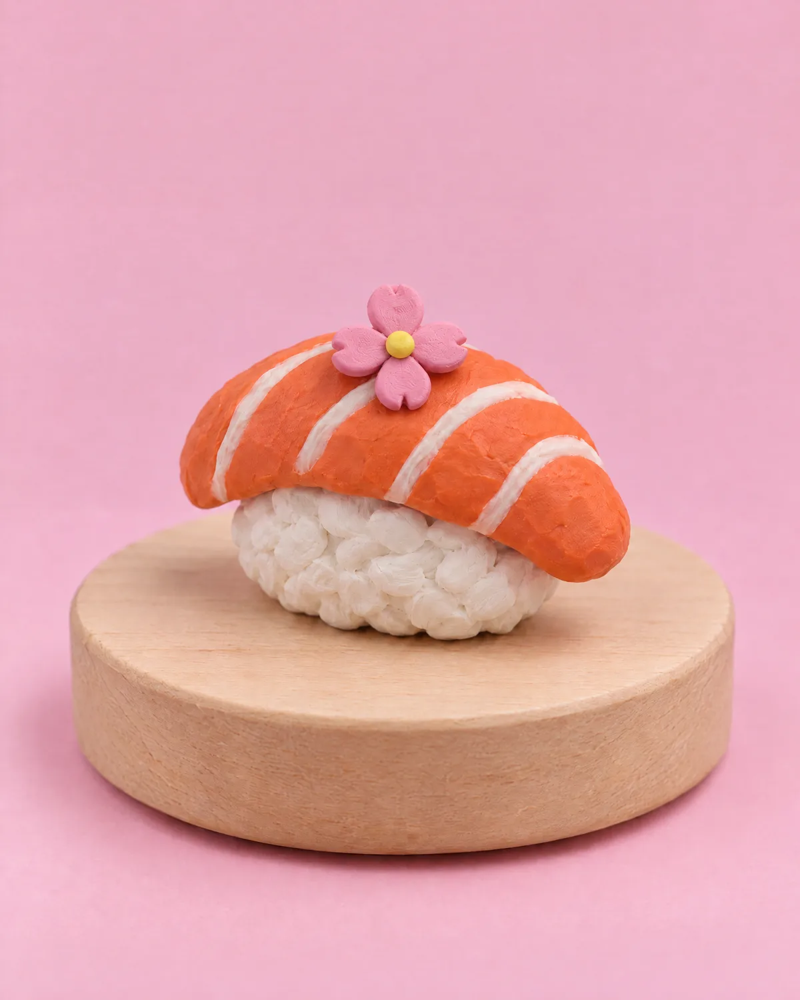
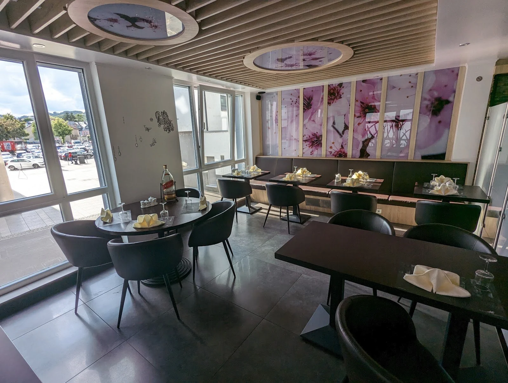
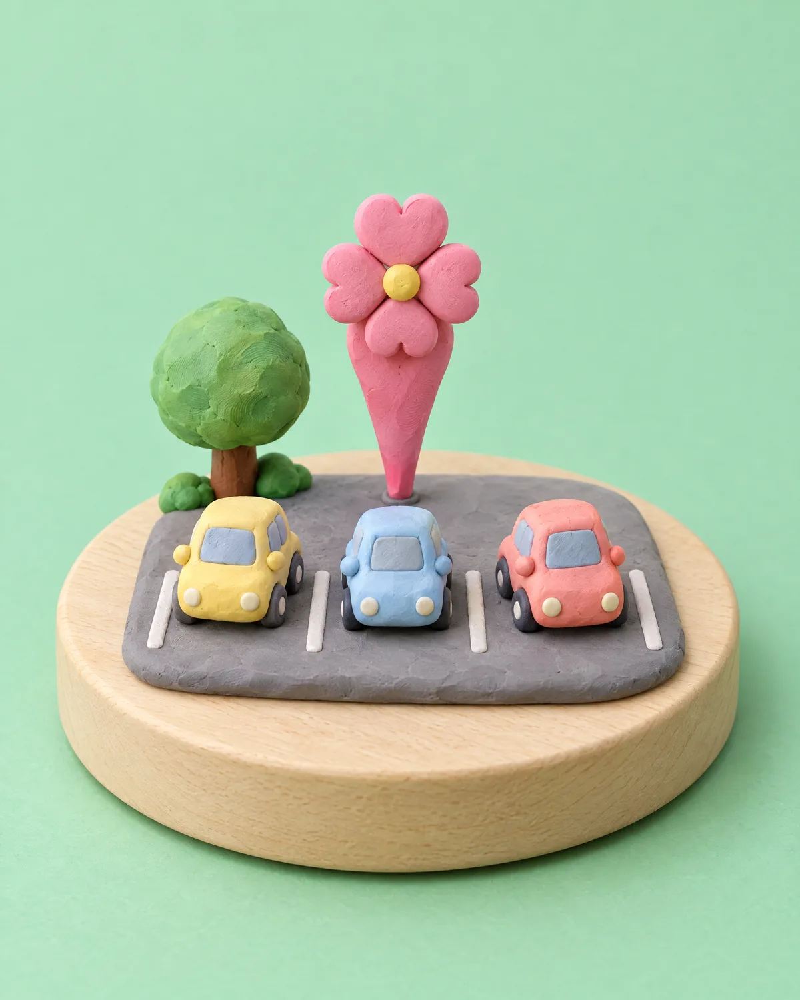
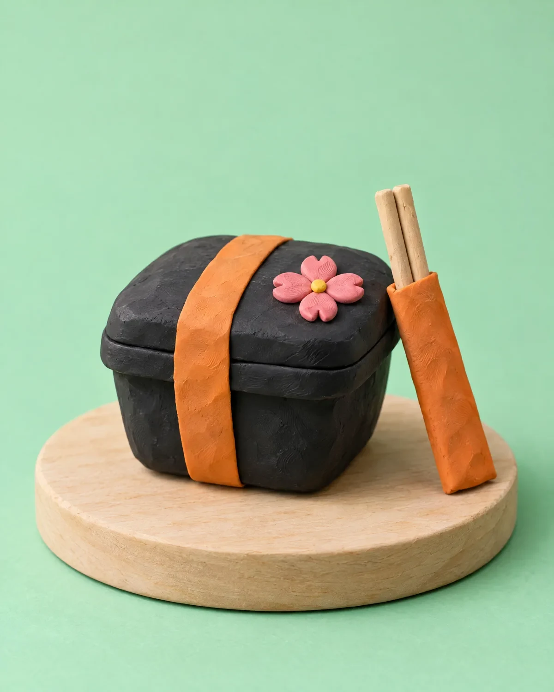

iwo · sushi & wok à Ettelbruck
Sushi & wok, à volonté ou à la carte



À volonté, sur place.
All you can eat, en famille ou en groupe. Vous commandez sur la tablette, autant que vous voulez.
Chez iwo

Sur le parking Cactus.
9, Place Marie-Adélaïde, L-9063 Ettelbruck
Entre le Conservatoire du Nord et la banque Reiff.

Parking Cactus
Horaires
| Lundi | 18:00–22:30 |
|---|---|
| Mardi | 18:00–22:30 |
| Mercredi | 12:00–14:0018:00–22:30 |
| Jeudi | 12:00–14:0018:00–22:30 |
| Vendredi | 12:00–14:0018:00–22:30 |
| Samedi | 12:00–14:0018:00–22:30 |
| Dimanche | 12:00–14:0018:00–22:30 |
Contact
- Téléphone+352 621 783 668
- WhatsAppÉcrire sur WhatsApp
- ItinéraireOuvrir dans Google Maps